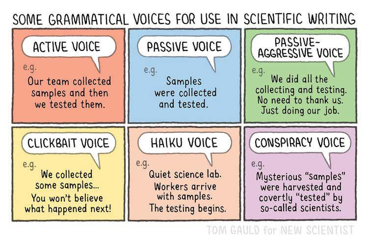

In technical & scientific communication, the voice you choose affects how readers perceive your work. Although we typically focus on active and passive voice, this week we are having a little fun exploring additional “voices” too!
Take a look at this comic by Tom Gauld for New Scientist:

Notice the differences:
For your writing, focus on using active voice unless you have a clear reason to choose otherwise. Active voice usually makes technical documents stronger, clearer, and more engaging for your audience.
Mini-Challenge: Try rewriting one of your own sentences in each of the six voices above—just for fun! Add it here as a comment.